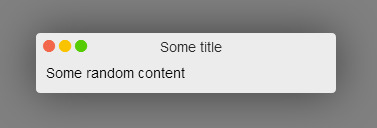
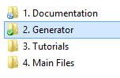
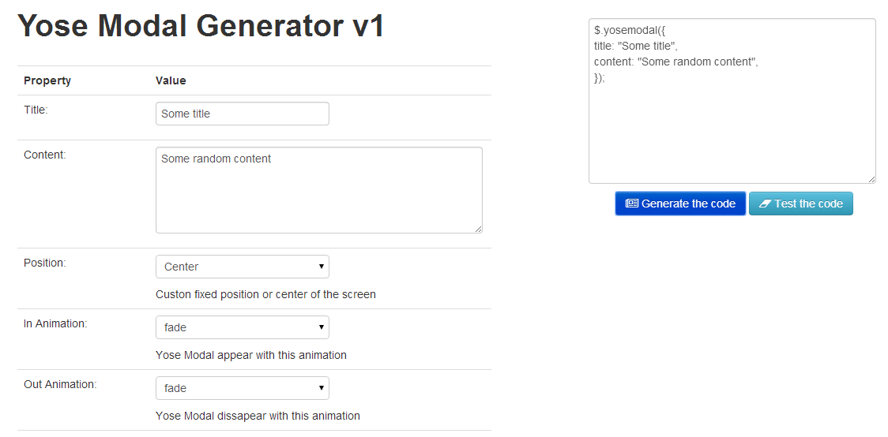
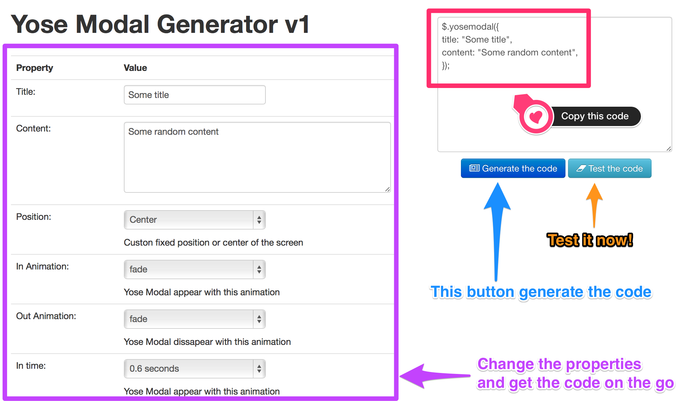

Before start, take your time and play with the Code Generator. Is a simple and easy way to understand the plugin call.
Also, I create a tutorial folder to show you examples and other stuff to help you master this plugin.
Any problem, suggestion or anything you want to tell, don't hesitate and contact me via my codecanyon profile:
http://codecanyon.net/user/klerith
Yose Modal uses a Generic jQuery, Font Awesome and Gsap libraries to make it work.
Library verions used:
This is all the make up you need to do.
This is recommended to place into the <head> section. I recommend to use the .MIN version, because it loads faster.
<!-- Font Awesome --> <link rel="stylesheet" href="static/font-awesome/css/font-awesome.min.css">
<!-- Yose Modal CSS --> <link rel="stylesheet" type="text/css" href="static/css/yosemodal.min.css">
This can me placed into <head> or in the footer, the important thing, is that you need to place them in the following order.
<!-- jQuery needed to run the puglin (needed) --> <script src="static/js/jquery-1.11.1.min.js"></script>
<!-- Gsap Animations --> <script src="static/js/gsap.js"></script>
<!-- Yose Modal JS --> <script src="static/js/yosemodal.min.js"></script>
And you are ready to go to use it as you want
This is an example of a Basic Call
$.yosemodal({
title: "Some title",
content: "Some random content",
});
This will create a basic yose modal like this

If you want to show the modal just after the page is loaded:
<script type="text/javascript">
$(document).ready(function(){
$.yosemodal({
title: "Some title",
content: "Some random content",
});
});
</script>
This is all the make up.
Before start reading all this properties, remember that I create a Generator just for you


| Property | Default Value | Example | Description |
|---|---|---|---|
| title | undefined | "Some Title" | (optional) - This is the value that appear in the top of the modal. |
| content | undefined | "Some Content" | (optional) - This is the content of the modal. If you are not using iFrame, youtube or transform a div, this value will be required. |
| position | "center" | "fixed" | Yose Modal custon fixed or center position. If you use fixed, you will need to specify the coordinates |
| top | undefined | 100px or 50% | Distance from the top screen (Bottom property most be empty) |
| bottom | undefined | 100px or 50% | Distance from the bottom of the screen. (Top property most be empty) |
| bottom | undefined | 100px or 50% | Distance from the left side. (Right property most be empty) |
| right | undefined | 100px or 50% | Distance from the left side. (Right property most be empty) |
| animation | "fade" | "bounceIn" | Yose Modal appear with this animation |
| animationout | "fade" | "side" | Yose Modal dissapear with this animation |
| intime | 0 | 0.5, 1, 2 seconds | Yose Modal appear with this time |
| indelay | 0 | 0.5, 1, 2 seconds | If you want some delay before appear |
| width | "300px" | "100px" or "50%" | Modal's width |
| height | undefined | "100px" or "50%" | (Optional) If you don't specify anything, it will addapt to the content |
| closeonclick | false | true | If you want to close the modal when the user clicks outside |
| showbuttons | true | false | If you want to show the buttons |
| red | true | false | Enable or disabled the Red Button |
| red | true | false | Enable or disabled the Yellow Button |
| green | true | false | Enable or disabled the green Button |
| faicon | undefined | fa-star-o |
Font-Awesome icon Click Here for a complete list of icons |
| img | undefined | "path/of/the/image" | Do you want a custom image instead of Font-Awesome Icon? |
| imgrounded | false | true | Do you want to make it rounded? |
| theme | "white" | "black" | Use a pre-made theme |
| backscreen | true | false | Do you want to block the page when the modal appear? |
| backscreen | "#000000" | Any HTML color | Backgrond color |
| bgopacity | 0.5 | 0.9 | Background color opacity |
| iframe | undefined | "Path" or "http://www...." | URL of the page that you want to show |
| iframecache | true | false | If you want to pre-load the iFrame |
| loadingmessage | "loading" | "Loading... please wait" | Custom loading text |
| loadingicon | "fa-gear" | "fa-star-o" | Font-Awesome icon |
| timeout | undefined | 2 (2 seconds) | Time before autoclose |
| youtubeurl | undefined | "roHaEWT2g0o" | YouTube ID for the video that you want to show |
| youtubecontrols | false | true | Hide or show the youtube video controls |
| youtubeinfo | false | true | Hide or show the youtube information about the video |
| divwithclass | undefined | "DivModal1" | And element with the unique class to turn it into a Yose Modal. |
| mobilehidebuttons | false | true | Force to hide Yose Modal buttons on mobile phones |
I know there are a lot of properties to change. This will make Yose Modal addapt to any kind of use, but you don't want to memorize every single one right?
This is the Yose Generator for Yose Modal, is easy to use and get the code in no time.

Now, I recommend you to check the Tutorial Folder.
In that place, you will see how to do thing that I usually get asked, like "How can I launch a Yose Modal when the form loads?" and stuff like that.
So, I hope Yose Modal works in your project like it help me in my owns.
Have a nice day